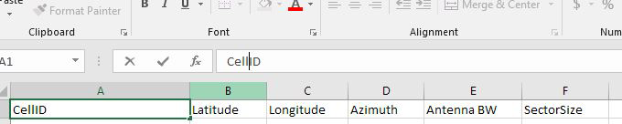
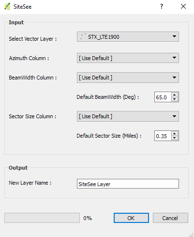

RF Tools - A QGIS Plugin
Home
RF Tools is a QGIS python plugin containing a series of tools useful for Radio Frequency and Wireless Telecommunication Engineers in visualizing, planning, deployment and optimization of cellular networks.
RF Tools RoadMap:
- SiteSee - Visualization of cell sites and sector azimuths. [Release Date : 02/28/2018]
- PCI/RSI Planner - Tool to aid in planning and assigning PCI and RSI to cells in an LTE Network [Release Date : 07/28/2018]
- Candidate Evaluator - Tool to automatically evaluate and select the best candidate in a search ring based on provided criteria. [Release Date : 09/28/2018]
SiteSee creates sector, azimuth and antenna beamwidth visualization of your cellular network. The output shape layer can be easily customized and contains all fields on the input file.
SiteSee : Input CSV file header as a vector layer

Import a csv file as a vector layer with coordinates, azimuth, antenna beamwidth(optional) and sector size(optional). SiteSee assumes an azimuth of 360 degrees (omni) if no azimuth or invalid azimuth is provided.
SiteSee :QGIS python GUI

- 1. Select Vector Layer to process
- 2. Select column containing azimuth(bearing). Default: 360
- 3. Select column containing antenna beamwidth or enter a default value to use for all cells
- 4. Select column containing sector size or enter a default value to use for all cells.
- 5. Enter output layer name and hit ok to process.